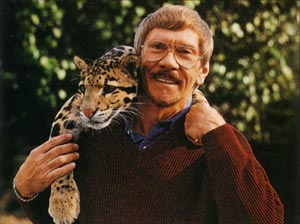

About Charles Fracé
Charles Fracé was born in 1926 in a small town in eastern Pennsylvania. He began drawing at five and taught himself to paint when he was fifteen. Fracé remembers wanting to be an artist from an early age. His self-instructed talent earned him a scholarship to Philadelphia's Museum School of Art, where he graduated with honors.
In 1955, Fracé began a professional career as a freelance illustrator in New York City. Eventually, he became one of the nation's most sought-after illustrators of wildlife. However, Fracé soon grew frustrated by the restrictions of illustrating ideas conceived by others and longed to paint some of his own. He finished only one, which his wife, Elke, took to a nearby art gallery. They insisted on displaying the painting in the gallery, and it sold that same afternoon.
In 1973, with the issue of Fracé's first limited edition print, he had finally made the permanent change to fine art. Fracé brings to his art over three decades of personal research and a close kinship with animals. Fracé and his art has been the subject of two books.
Perhaps the greatest honor of his career came in October 1992, when Fracé was recognized with a one-man exhibit of thirty-six of his paintings at the National Museum of Natural History of the Smithsonian Institution in Washington, D.C.
Charles Fracé passed away December 16, 2005 after a long illness. Mr. Fracé's legacy will continue to live on in his masterful work which has captivated art collectors and intrigued nature experts for over thirty years.
The Anatomy of a Painting
Royal Pride in the Rough.
This photographic sequence reveals something few people have ever seen—the evolution of a Charles Fracé painting.
Royal Pride began as all Fracé paintings do—as a rough sketch, one arrived at after actual field research and lengthy experiments in composition. The sketch is transfered to the artist's canvas and painted in stages.
A Fracé painting is a building process, with one thin layer of paint over another, creating depth and contour. The latter layers, or stages, are the "icing on the cake"—subtle shadows and fine detail that make Mr. Fracé's creatures look so alive and engaging.
The fifth image in the sequence is the final result.